Ben je elektricien en woon je in (de buurt van) Dendermonde?
Ontdek of jij in aanmerking komt voor een job bij Electro Zwijsen!
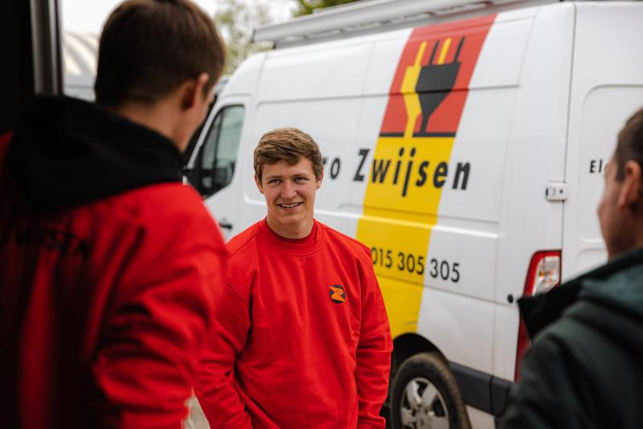
- ContractVast, vanaf dag één
- LoonGoed loon, volgens ervaring
- Vakantie32 vakantiedagen
- Dertiende maandJa
- Maaltijdcheques9 euro per gewerkte dag
- HospitalisatieVoor jou én je gezin
- WerkweekMa–vr, 40 uur
- ErvaringMinstens 3 jaar
Geen CV nodig · 4 vragen · ±30 seconden
Wat zijn jouw voordelen?
Alle elf, punt per punt.
| Loon | Goed loon, volgens ervaring |
|---|---|
| Vakantie | 32 vakantiedagen |
| Dertiende maand | Ja |
| Maaltijdcheques | 9 euro per gewerkte dag |
| Hospitalisatieverzekering | Voor jou én je gezin |
| Medische kosten | Extra terugbetaling van doktersbezoeken, medicatie en andere medische kosten |
| Groepsverzekering | Ja |
| Telefoon | Telefoon met abonnement |
| Kilometervergoeding | Tot de werf |
| Werkkledij | Ja |
| Beschermingsmateriaal | Ja |
| Contract | Vast contract: vanaf dag één ben je aan boord bij ons familiebedrijf met 150 collega’s. |
|---|---|
| Werkweek | Je werkt van maandag tot vrijdag, 40 uur per week. Overuren of zaterdagwerk zijn uitzonderlijk. |
| Naar de werf | Je rijdt samen met je collega uit de regio Dendermonde naar de werf. Voor de verplaatsing krijg je een kilometervergoeding als chauffeur of bijrijder. |
| Werven | De werven zijn in heel België, met focus op Vlaanderen. Soms werk je dicht bij huis, soms ligt een project verder weg. Ziekenhuizen, scholen, kantoorgebouwen, winkelcentra,… |
| Je taken | Je bouwt nieuwe elektrische installaties van a tot z op grote werven, samen met je collega’s: kabelgoten plaatsen, kabels trekken, schakelmateriaal plaatsen, verlichtingstoestellen aansluiten, aansluitingen maken in verdeelborden, zorgen dat het volledige project goed wordt opgeleverd. |
| Ervaring | Minstens 3 jaar ervaring als elektricien. Ervaring op werven is een plus, geen must. |
| Woonplaats | Je woont in (of vlakbij) Dendermonde. |
| Rijbewijs | Je hebt minstens rijbewijs B. |
| Taal | Je spreekt Nederlands. |
| VCA | Je hebt een VCA-attest. |


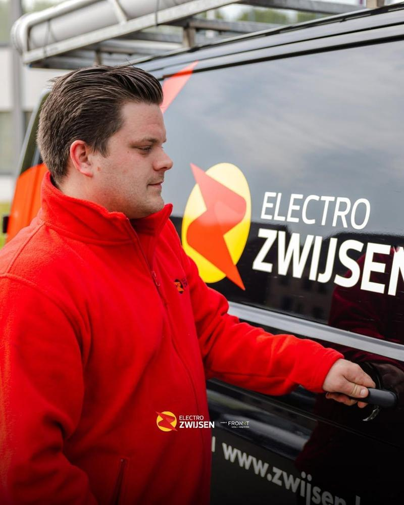
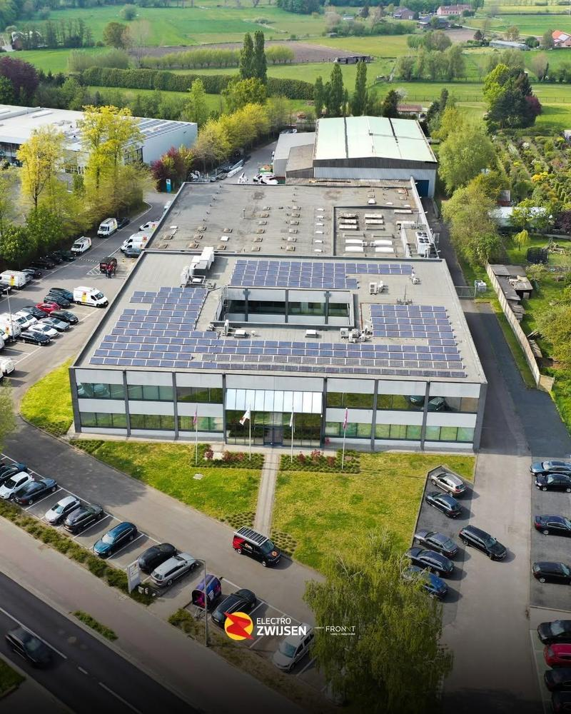


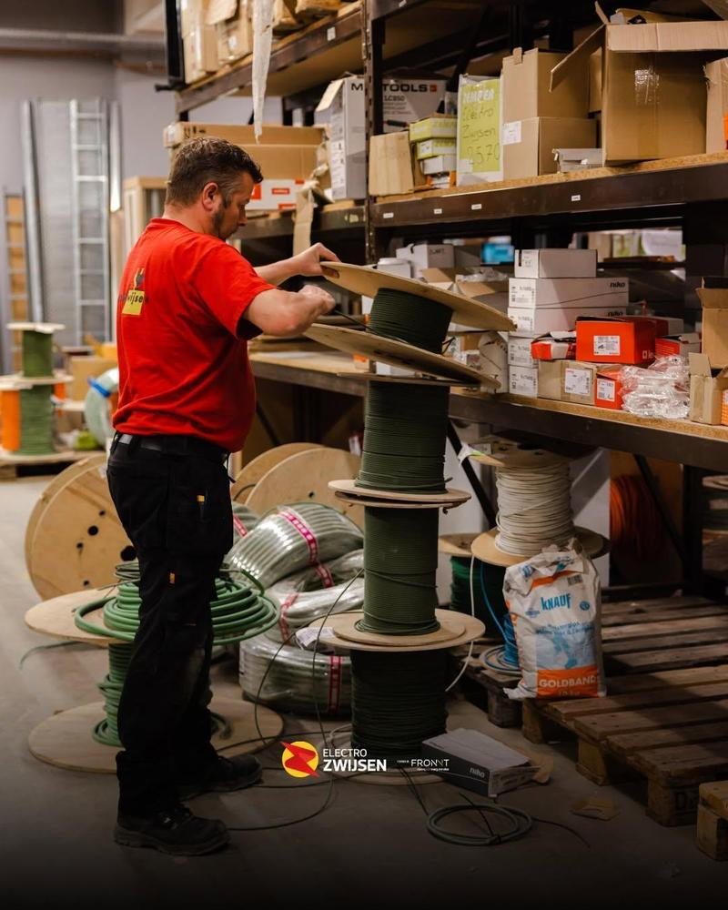
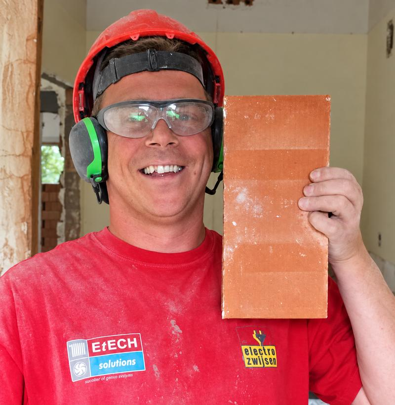


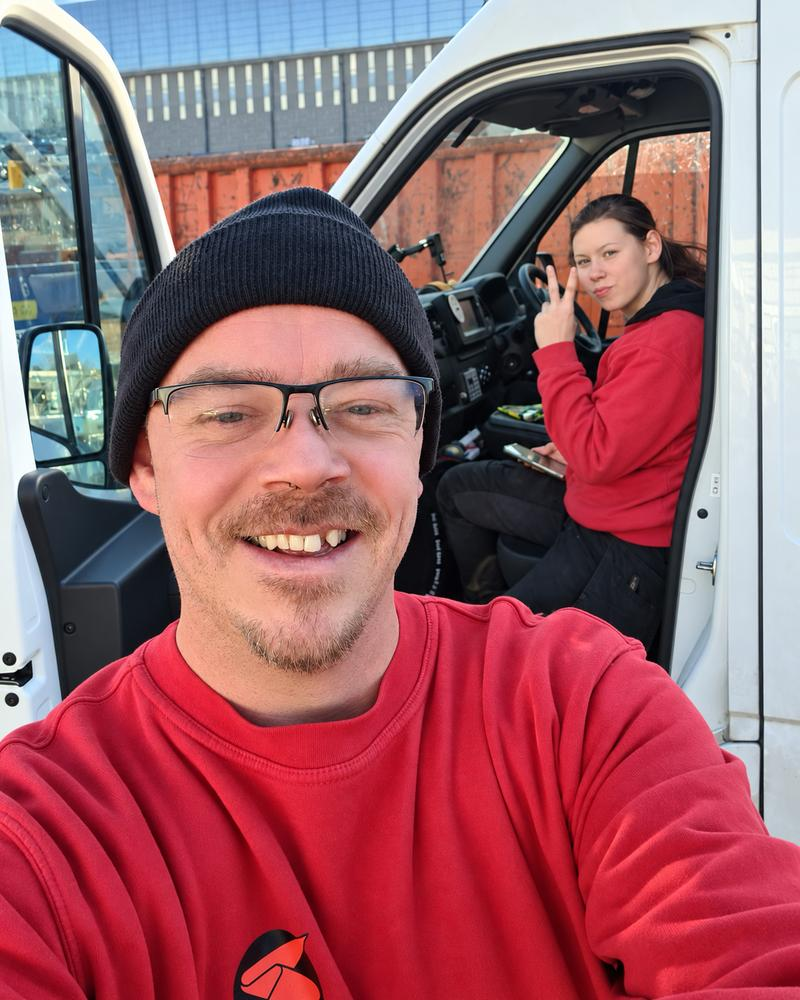

Veeg opzij voor meer foto’s →
Wat maakt deze job de moeite waard?
Grote werven
Werk aan ziekenhuizen, scholen, kantoorgebouwen, winkelcentra,…
Breed takenpakket
Bouw mee aan elektrische installaties van a tot z.
Afwisseling
Geregeld nieuwe projecten, vooral in Vlaanderen.
Vrijheid in je vak
Je werkt zelfstandig en organiseert je werk zelf. Het resultaat telt.
In duo
Je rijdt samen met een ervaren collega van Dendermonde naar de werf.
Vast contract
Vanaf dag één ben je aan boord bij ons familiebedrijf met 150 collega’s.
De selectie van de nieuwe werven
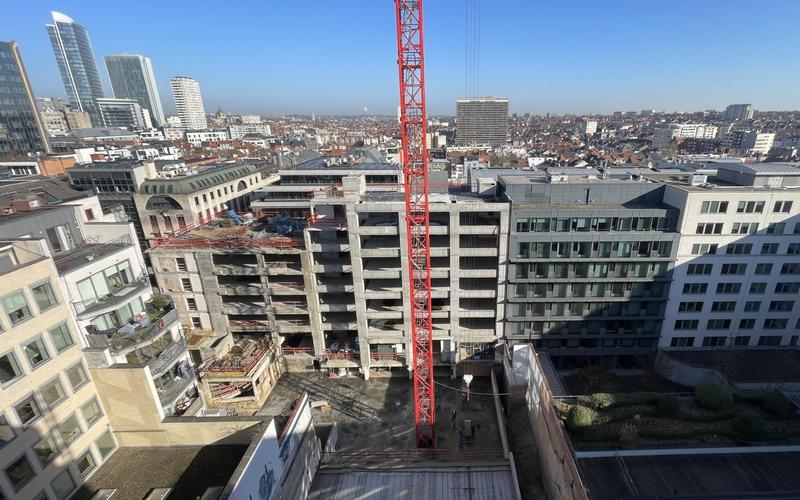
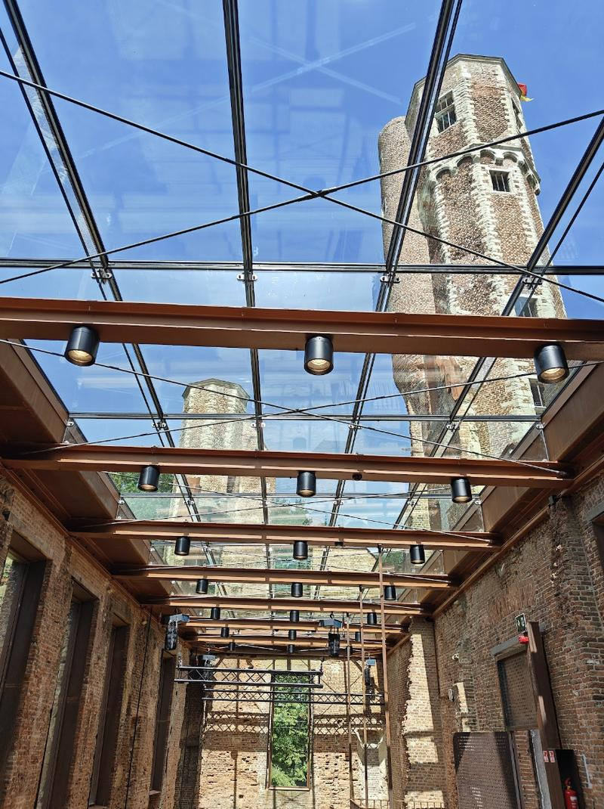
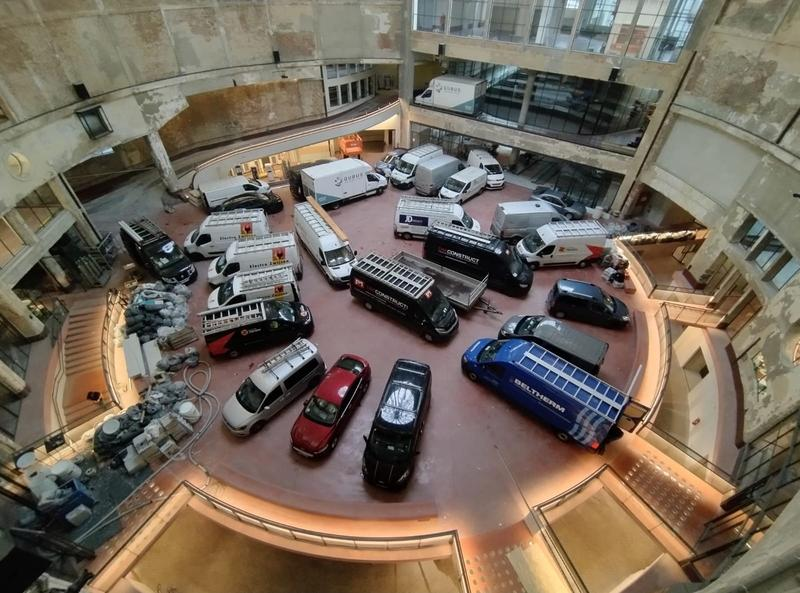
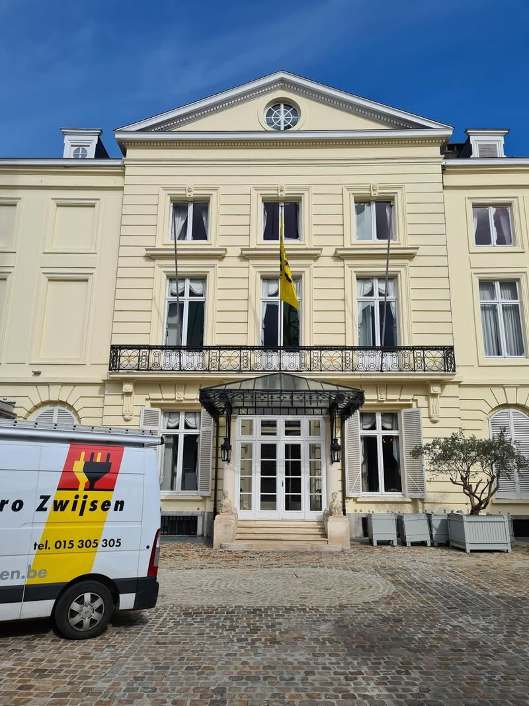

Wij zijn Electro Zwijsen
Wij zijn een hecht familiebedrijf van 150 collega’s. Het hoofdkantoor is in Duffel en we hebben ook een filiaal in Zonhoven. Sinds 1987 zijn we expert in elektriciteit. Naast algemene elektriciteitswerken bouwden we doorheen de jaren expertise op in midden- en hoogspanning, datanetwerken, elektrische laadinstallaties en beveiliging, van branddetectie tot inbraakbeveiliging. Kansen genoeg voor wie wil doorgroeien. Wij zijn een werkgever die expertise naar waarde schat.
Waarom kies je voor Electro Zwijsen?
“Ik hou van de afwisseling in mijn job. Geen twee werven zijn hetzelfde. Zelfs na al die jaren kom ik nog geregeld iets tegen waarvan ik denk: dat wist ik nog niet.”

“Ik weet wat ik aan Zwijsen heb: een correcte werkgever die altijd stipt betaalt en toffe collega’s met wie ik graag samenwerk. Dat is belangrijk, want je brengt veel tijd met elkaar door. Doorheen de jaren heb ik ook veel opleidingen kunnen volgen: voor de hoogtewerker, schaarlift, heftruck en VCA.”


Solliciteer direct zonder CV
Vier korte vragen: je werkervaring, je moedertaal, je rijbewijs en waar je woont. Daarna laat je je naam, telefoonnummer en e-mailadres na, en wij nemen contact.
Ben jij dit?
- Minstens 3 jaar ervaring als elektricien
- Je woont in (of vlakbij) Dendermonde
- Je hebt minstens rijbewijs B
- Je spreekt Nederlands
- Je hebt een VCA-attest
- Ervaring op werven is een plus, geen must
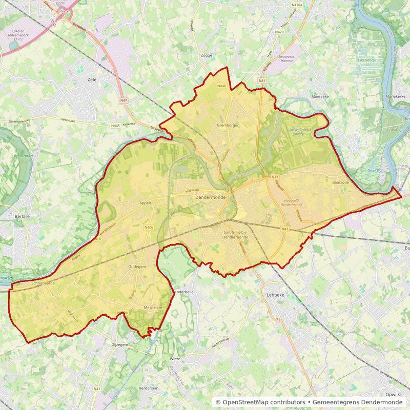
Volledig vertrouwelijk. Je gegevens gaan enkel naar onze personeelsdienst en worden niet gedeeld met derden.
Kom je in aanmerking? Doe de test.
4 vragen, ongeveer 30 seconden. Geen CV nodig.
Bellen mag ook. Dan hoor je het gewoon van ons.
Liever eerst je vragen stellen voor je iets invult? Vraag naar de personeelsdienst.